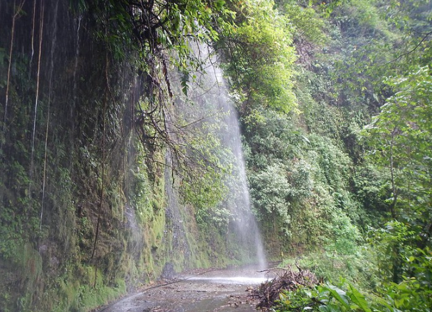
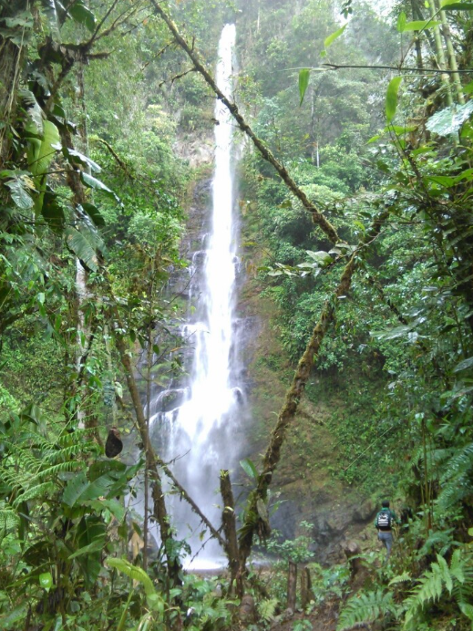
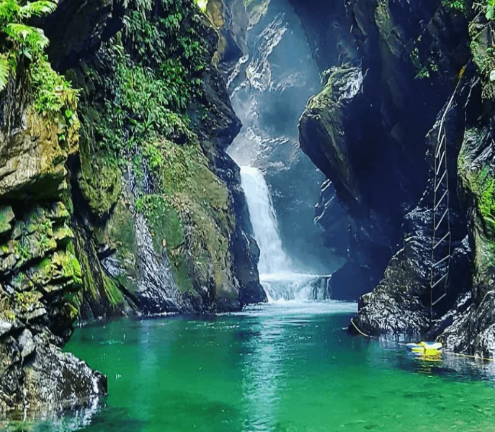

Bienvenido a su aplicación de confianza de atención al cliente.
Sí necesita realizar un reporte, diríjase a las 3 lineas de la parte superior izquierda.

El Aporte de esta aplicación móvil y web.
Para quienes usan nuestros servicios públicos hídricos en el sector del Quereaml central, habitantes y comerciantes de la localidad, tendrán ahora una herramienta que facilitará sus derechos en la prestación de servicios publico hídrico, donde tambien serán escuchados en solicitudes que los afecte en la comunidad o de manera individual de su domicilio o sector residencial.
Este proyecto abarca actividades para el debido mantenimiento de infraestructura local, empresarial, alcantarillado y reparacion de daños publicos y contratados.
El aporte que ofrece la tecnología
La automatizacion de los reportes y solicitudes que se generen en esta aplicación, mejorarán el tiempo de respuesta y solución de daños y atenciones para con el usuario cliente de los servicios públicos hídricos.
Esta implementacion tecnológica esta pensada para mejorar la atencion al cliente, el cuidado de los recursos e impulsar el cuidado del recurso hidrico a travezde la tecnología.

